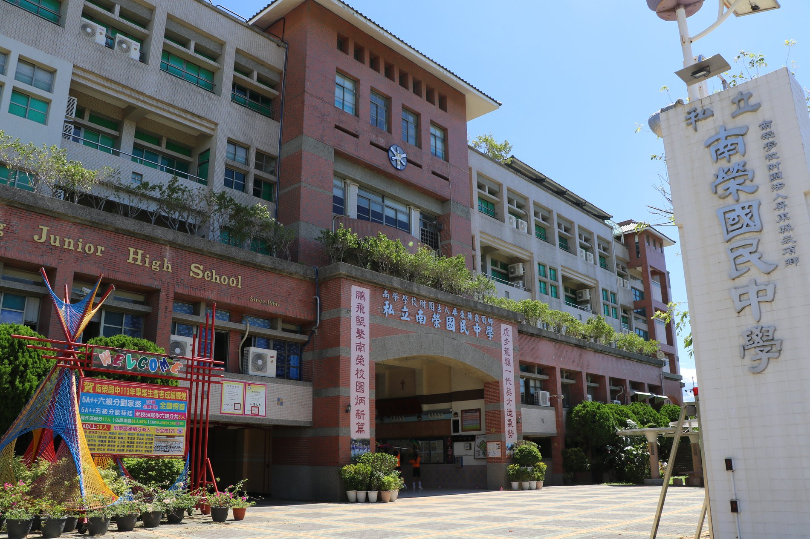
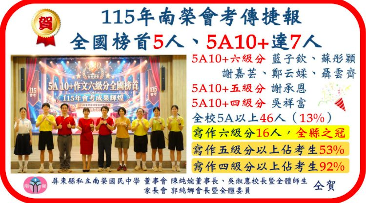
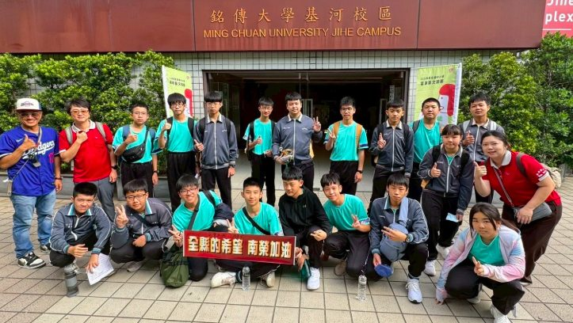
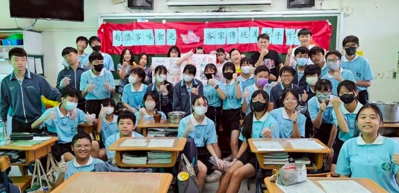
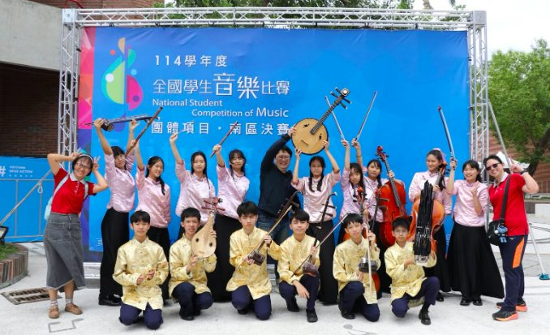
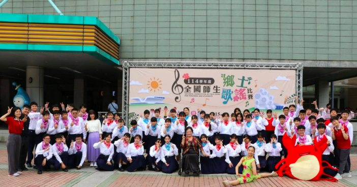

From the Campus南榮のいま

2026 · 06 · 12
Music音楽
On the evening of 10 June 2026, the school hall filled with families and friends for Nan Jung's eighth annual Harmonica …
2026年6月10日の夜、南榮の講堂は卒業ハーモニカ演奏会を見にきた家族や友人でいっぱいになりました。あいにくの荒天にも…

2026 · 06 · 11
Arts芸術
To nurture creativity and artistic skill, Nan Jung held its 7th-grade inter-class Creative Puppet Theater competition. E…
創造力と芸術的素養を育むため、南榮は7年生のクラス対抗・創作人形劇コンクールを開催しました。各クラスが脚本づくりから人形…

2026 · 06 · 08
Language語学
At the 2026 Chaozhou District Language Competition, held on 6 June at Xinpi Elementary School, Nan Jung's students met t…
2026年6月6日、新埤国小で行われた潮州区語文コンクールで、南榮の選手たちは地域の精鋭と競い合い、見事な成果をあげまし…

2026 · 06 · 05
Achievement学力
When the results of the 2026 national junior-high exam were announced, all five of Pingtung County's top scorers came fr…
2026年の国中教育会考の結果が発表されると、屏東県の最高得点者5名はすべて南榮の生徒でした。学校の着実で全人的な学びの…
2026 · 06 · 05
International国際
On the evening of 28 July 2026, the Nan Jung choir will take the stage at the Pingtung Performing Arts Center as part of…
2026年7月28日(火)の夜、南榮合唱団は屏東演藝廳の舞台に立ち、台北国際合唱音楽祭の一環として、ハンガリーの名門Ca…
2026 · 05 · 29
Service奉仕
On the afternoon of 28 May 2026, Nan Jung's eighth-graders set out in groups to clean the campus and the neighboring co…
2026年5月28日の午後、南榮の8年生がグループに分かれ、校内と近隣地域の清掃に出かけました。学校が進める奉仕学習と品…

2026 · 05 · 28
English英語
On 25 May 2026, Nan Jung held its eighth-grade English Readers' Theater contest — and this year broke new ground. Instea…
2026年5月25日、南榮は8年生の英語リーダーズ・シアター大会を開催し、今年は新たな試みに挑みました。従来の形式に代え…

2026 · 05 · 25
Language語学
On 24 May 2026, Nan Jung students traveled to Ming Chuan University for the national Hakka Arts Competition's conversat…
2026年5月24日、南榮の生徒たちは銘傳大学で開かれた全国客家芸文コンクールの会話部門に出場しました。自然で流暢な客家…

2026 · 05 · 18
Care寄り添い
As the 2026 national junior-high exam took place on 16–17 May, Nan Jung's ninth-graders sat their papers at Jiadong Agri…
2026年5月16・17日に行われた国中教育会考で、南榮の9年生は佳冬高農で受験に臨みました。人生の節目に向けて生徒を落…

2026 · 05 · 11
Community地域
To celebrate Mother's Day, Kanding Township held its 2026 Model Mothers ceremony, and Nan Jung's dance troupe was invite…
母の日を祝い、崁頂郷公所が2026年の模範母親表彰式を盛大に開催し、南榮の舞踊団が招かれて出演しました。日々を支える偉大…

2026 · 04 · 27
International国際
Nan Jung, long devoted to international education and to raising students as “good global citizens,” recently welcomed m…
国際教育に長く力を注ぎ、生徒を「優れた世界市民」に育てることをめざす南榮は先ごろ、姉妹校・日本のさくら国際高等学校から8…

2026 · 04 · 20
Culture文化
To root Hakka culture in the next generation, Nan Jung partnered with Tzu Hui Institute of Technology, holding a “Nan Ju…
客家文化を次の世代に根づかせようと、南榮は慈恵医専と連携し、「南榮客味食光」客家伝統美食体験を開きました。実作と文化解説…

2026 · 04 · 17
Arts芸術
At the 2026 All-Taiwan Music & Dance Competition, Nan Jung once again showed its deep artistic strength. Representing Pi…
2026年の全国音楽舞踊コンクールで、南榮は再びその確かな芸術力を示しました。屏東県代表として、団体・個人の出場で全国特…
2026 · 04 · 17
English英語
The campus rang with song and laughter as the Studio Classroom team brought their lively “Better Together” campus tour t…
空中英語教室チームが、活気あふれる「Better Together」キャンパスツアーを南榮に届け、校内は歌と笑い声に包ま…

2026 · 04 · 10
Music音楽
At the 2026 National Teachers' & Students' Folk Song Competition, the Nan Jung choir stood out with poised, finely shade…
2026年の全国師生郷土歌謡コンクールで、南榮合唱団は安定した、繊細な表現の歌唱で抜きん出て、最高位の「特優」を受賞しま…